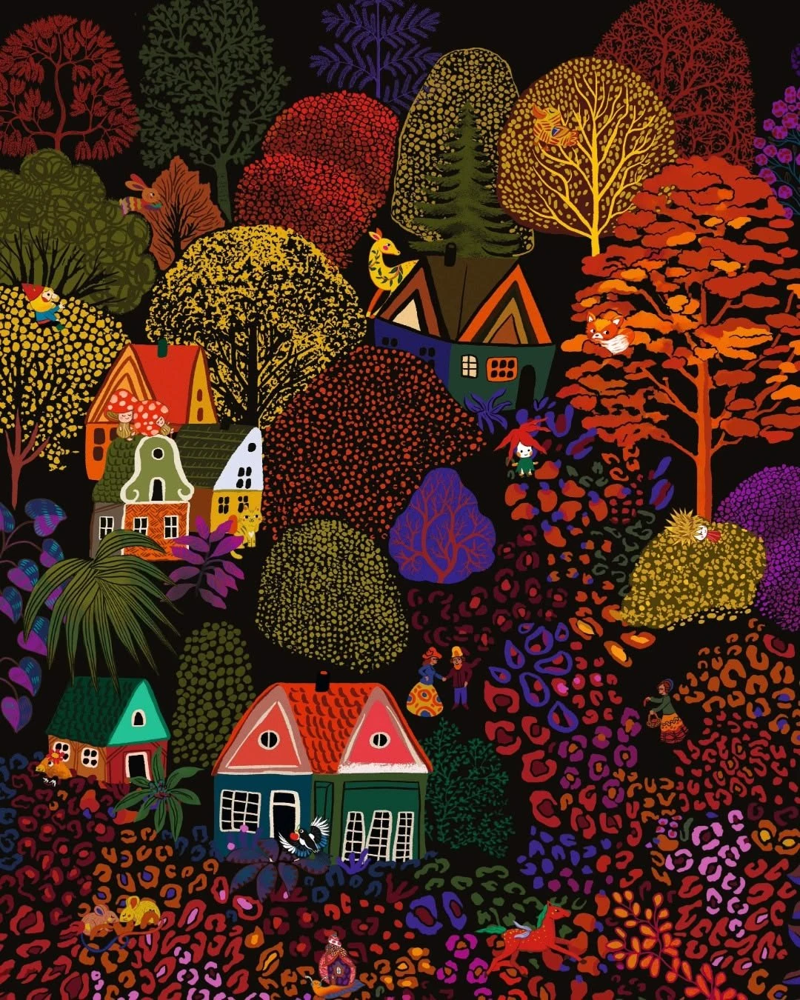

风格指南 · 视觉表现方法
笔触写实肖像
John Singer Sargent
把形体画准，把笔触留下来。用明暗关系建立人物，再以松动的色块表达衣料与环境。
浏览与探索
按名字找，也按看得见的特征找。同一维度多选取并集，不同维度组合取交集；参考题材只说明当前样例。
全部 18 条内容
每页最多 24 条John Singer Sargent
把形体画准，把笔触留下来。用明暗关系建立人物，再以松动的色块表达衣料与环境。

Alphonse Mucha
流动的轮廓把人物、衣褶与装饰组织在一起。先看线的节奏，再看画面怎样成为一个整体。

Tamara de Lempicka
把身体与衣料看作精确而有力的体块。几何化的转折、利落边缘和光泽让人物显得摩登。

Egon Schiele
形体不只记录外貌，也表达心理状态。折转的轮廓、不均匀的颜色和留白让情绪变得可见。

Uemura Shōen
用精炼的轮廓、节制的设色和姿态传达神韵。少量线条也能表达衣料、动作与人物的精神。

Moebius
清楚的轮廓配上有选择的细节，让陌生世界显得可信。人物设计与空间想象可以由精密线描承载。

Mary Blair
大胆色彩与简洁形状共同讲故事。人物可以很小，画面依然通过形状、比例和冷暖让情绪一目了然。

Malika Favre
只留下不可替代的形状。轮廓、负空间和少量颜色同时承担人物识别、光影与视觉趣味。

作者未核实
金色枝叶织成浓密森林。深蓝夜色、朱红点缀与蜿蜒小径，共同建立华丽而神秘的童话空间。

作者未核实
以钴蓝天空与清新绿色打开画面。细金线贯穿叶脉、枝条和云纹，让自然景观具有精密的装饰秩序。

Addison Bacheller
明确的建筑体积与柔和造型相结合。概括的材质、温暖日光和层次化植物，让场景呈现安静的童话庄园感。

作者未核实
不透明的粗颗粒颜料、刻线般的植物剪影与小比例人物，让环境参与叙事。冷绿蓝色盘中，橙红色承担情绪焦点。

发布者 JenPanepinto；作者未核实
繁密花丛从深蓝夜幕中浮现，奶白、粉紫与金黄花瓣点亮冷蓝和青绿色的植物。细雨、金色微光与水波般的局部形变，共同形成潮湿、浪漫而略带迷幻的花园动景。

Franklin Carmichael
山丘像波浪般层层展开，云带与坡面相互呼应；明亮的橙红、金黄与冷蓝远景形成强烈对照。秋林中的白桦和深色针叶树构成竖向骨架，短笔触把叶丛、岩石和光斑织成有秩序的色块。本条以三幅可对应作品的用户复现图归纳风格。

Albert Bierstadt
比尔施塔特把山谷、湖岸和草原组织成宏阔而富于情绪的空间。深色树群与岩壁围住远处的亮天、薄雾和水面；暖金受光区在蓝灰风暴云、暗绿树林与褐紫阴影间展开。近景的细节与远景的柔和过渡共同制造可走入的深度。本条以六幅已对应作品的用户复现图归纳风格，另两张同批附图暂存于待核实区。

Peggy Nille
这里的森林像一张可以不断寻找细节的彩色织毯：树冠、羽毛、花瓣与房屋各有自己的纹样，小人物和动物隐入其间。大轮廓让画面远看成立，细密图案让近看充满发现；黑底暖色、蓝紫幻想、明亮白底与深蓝月夜，是同一装饰语言的不同展开。

作者未核实
这组图把古诗中的一个瞬间放进狭长画幅：密集树冠围出河道、小径或白墙，视线沿浅色空隙缓缓移动，最后停在独钓、指路、停泊、荷尖蜻蜓或越墙花枝上。它的长处是用“大色块—小叙事—细密纹理”建立远近观看的层次；青绿与朱红最鲜明，蓝灰雪景、桃粉花海和荷塘绿调则证明，同一构图语言可以承载不同季节。作为海报，系列统一、主题易读；作为诗意插图，部分画面的华美与热烈也会减弱诗句中的清寒、怅惘或今昔之感。

作者未核实
这组竖幅人物插画以黑色轮廓、有限的哑光设色、卷浪、竖排题签和米黄旧纸效果建立浮世绘感，再把手掌、巨剑、头发和衣带推向观者，形成现代武侠动作海报的冲击力。系列统一性很强，乔峰的掌与龙、周伯通的双手与竹、黄药师的笛与海浪、杨过的剑与雕，又用不同物件提示人物身份。最值得学习的是“大动作—大色面—流动细线”的组织；主要不足是满幅裂纹与碎斑削弱疏密，部分黑发、衣袍、羽翼和山石相互粘连。四张中，黄药师的动静对照与色彩分区最突出，周伯通的表情与明暗分离较鲜明。